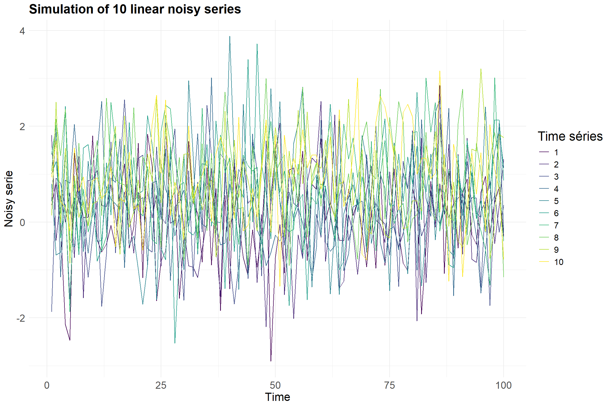

Code
# Données
library(dplyr) # manipulation des données
library(latex2exp)
# Plots
## ggplot
library(ggplot2)
library(gridExtra)# Données
library(dplyr) # manipulation des données
library(latex2exp)
# Plots
## ggplot
library(ggplot2)
library(gridExtra)random_walk <- function(n, delta) {
w <- rnorm(n)
drift <- delta * seq(1, n)
x <- drift + cumsum(w)
return(x)
}noisy_serie <- function(n, delta) {
w <- rnorm(n, sd = 1)
drift <- delta * seq(1, n)
x <- drift + w
return(x)
}plot_simulation_time_series <- function(data, main_title, y_lab) {
plot_data <- data.frame(
Time = rep(1:n, I),
Value = as.vector(data),
Group = rep(1:I, each = n)
)
ggplot(plot_data, aes(
x = Time,
y = Value,
group = Group,
color = factor(Group)
)) +
geom_line() +
scale_color_viridis_d(name = "Time séries") +
labs(title = main_title,
x = "Time",
y = y_lab) +
theme_minimal() +
theme(legend.title = element_text(size = 18),
legend.text = element_text(size = 12),
axis.title = element_text(size = 16),
axis.text = element_text(size = 14),
plot.title = element_text(size = 18, face = "bold"))
}set.seed(140400)Pour cette exercice, nous allons étudier deux types de séries temporelles : les marches aléatoires et les signaux linéaires bruités.
Pour cela nous allons simuler :
dix marches aléatoires \((x^1_t)_t\)de la forme \(x^1_t = \delta + w_t\) avec dérive de longueur \(n=100\), de paramètre \(\delta=.01\) et de variance \(\sigma_W^2 = 1\) pour le bruit.
dix séries \((x^2_t)_t\) de la forme \(x^2_t = \delta t + w_t\) (tendance + bruit blanc) de longueur \(n = 100\), de paramètre \(\delta = .01\) et de variance \(\sigma^2_W = 1\)
Si on pose que \(x_0 = w_0\), on peut écrire notre marche aléatoire comme \(x_t = \delta t + \sum_{i=0}^{t}w_i\)
n <- 100 ## length
delta <- .01 ## drift parameter
I <- 10 ## number of seriessim <- t(simplify2array(lapply(1:I, function(i) random_walk(n, delta))))plot_simulation_time_series(sim, main_title = TeX(paste("Simulation of", I, "Random Walks with drift $\\delta$ =", delta)), y_lab = "Random Walk")sim2 <- t(simplify2array(lapply(1:I, function(i) noisy_serie(n, delta))))plot_simulation_time_series(sim2, main_title = paste("Simulation of", I, "linear noisy series"), y_lab = "Noisy serie")
Pour les deux types de séries, nous allons estimer le modèle de régression linéaire \[x^\xi_t = \beta t + w_t \quad \text{pour} \quad \xi=1,2\]
sim_coeff <- apply(sim, 1, function(x) {
mod <- lm(x ~ 0 + seq(1, n))
return(mod$coefficients)
})
df_sim_coeff <- data.frame(coeff = paste("beta_", seq(1,10)), estimation = round(sim_coeff, 3))
t(df_sim_coeff) %>% DT::datatable()sim2_coeff <- apply(sim2, 1, function(x) {
mod <- lm(x ~ 0 + seq(1, n))
return(mod$coefficients)
})
df_sim2_coeff <- data.frame(coeff = paste("beta_", seq(1,10)), estimation = round(sim2_coeff, 3))
t(df_sim2_coeff) %>% DT::datatable()Avec ces résulats, nous pouvons par la suite représenter sur un même graphique les dix droites estimées et la tendance moyenne théorique \(\delta t=.01t\).
time <- seq(1, n)
# Créer un data.frame pour les courbes simulées
sim_data <- data.frame(
time = rep(time, I),
value = unlist(lapply(1:I, function(i) sim_coeff[i] * time)),
group = rep(1:I, each = n)
)
# Créer la ligne théorique
theoretical_trend <- data.frame(
time = time,
value = 0.01 * time,
group = "Theoretical Trend"
)
# Plot avec ggplot
library(ggplot2)
ggplot(sim_data, aes(x = time, y = value, group = group, color = factor(group))) +
geom_line(size = .5, color = "orange") + # Courbes simulées
geom_line(data = theoretical_trend, aes(x = time, y = value), color = "red", linetype = "dashed", size = 1.) + # Ligne théorique
labs(
title = "Graphe of the estimations",
x = "Time",
y = "Estimated values",
color = "Simulated Curves"
) +
scale_color_manual(values = rep("orange", I)) + # Couleur orange pour toutes les courbes simulées
theme_minimal() +
theme(legend.position = "topleft") +
annotate("text", x = 10, y = 9, label = TeX("Theoretical trend $\\delta_t = 0.01t$"), color = "red", hjust = 0)
Résultats
Nous pouvons facilement voir que les estimations ne semble pas du tout suivre la tendance moyenne théoriques.
La variance des estimations semble même croitre au cours du temps.
time <- seq(1, n)
# Créer un data.frame pour les courbes simulées
sim_data <- data.frame(
time = rep(time, I),
value = unlist(lapply(1:I, function(i) sim2_coeff[i] * time)),
group = rep(1:I, each = n)
)
# Créer la ligne théorique
theoretical_trend <- data.frame(
time = time,
value = 0.01 * time,
group = "Theoretical Trend"
)
ggplot(sim_data, aes(x = time, y = value, group = group, color = factor(group))) +
geom_line(size = .5, color = "orange") + # Courbes simulées
geom_line(data = theoretical_trend, aes(x = time, y = value), color = "red", linetype = "dashed", size = 1.) + # Ligne théorique
labs(
title = "Graphe of the estimations",
x = "Time",
y = "Estimated values",
color = "Simulated Curves"
) +
scale_color_manual(values = rep("orange", I)) + # Couleur orange pour toutes les courbes simulées
theme_minimal() +
theme(legend.position = "topleft") +
annotate("text", x = 10, y = 9, label = TeX("Theoretical trend $\\delta_t = 0.01t$"), color = "red", hjust = 0)
Résultats
Nous constatons ici que l’estimation semble très bien fonctionner avec des lignes qui semblent toutes proches de la tendance moyenne théorique.
Nous avons pu voir avec cette exercice que la tendance théorique (le drift) est mieux estimée par régression dans le cas d’un signal bruité que celui de la marche aléatoire.
Cela s’explique par le fait que, dans le cas de la marche aléatoire, la variance de \(x_t\) croît linéairement avec le temps. En effet, \[\begin{align*} Var(x_t) &= Var(\delta t + \sum_{i=0}^{t}w_i)\\ &= Var(\sum_{i=0}^{t}w_i)\\ &= \sum_{i=0}^{t}Var(w_i)\\ &= \sum_{i=0}^{t}\sigma^2_w\\ &= t\sigma^2_w \end{align*}\]
Cela fait donc défaut à l’hypothèse d’homoscédacité cruciale pour la régression linéaire.
Par contre, du côté du signal bruite on conserve l’homoscédacité avec le cas très idéal du bruit iid (indépendant et identiquement distribué) et gaussien.
sessioninfo::session_info(pkgs = "attached")─ Session info ───────────────────────────────────────────────────────────────
setting value
version R version 4.2.1 (2022-06-23 ucrt)
os Windows 10 x64 (build 22631)
system x86_64, mingw32
ui RTerm
language (EN)
collate French_France.utf8
ctype French_France.utf8
tz Europe/Paris
date 2025-03-02
pandoc 3.2 @ C:/Program Files/RStudio/resources/app/bin/quarto/bin/tools/ (via rmarkdown)
─ Packages ───────────────────────────────────────────────────────────────────
package * version date (UTC) lib source
dplyr * 1.1.4 2023-11-17 [1] CRAN (R 4.2.3)
ggplot2 * 3.5.1 2024-04-23 [1] CRAN (R 4.2.3)
gridExtra * 2.3 2017-09-09 [1] CRAN (R 4.2.1)
latex2exp * 0.9.6 2022-11-28 [1] CRAN (R 4.2.3)
[1] C:/Users/cleme/AppData/Local/R/win-library/4.2
[2] C:/Program Files/R/R-4.2.1/library
──────────────────────────────────────────────────────────────────────────────